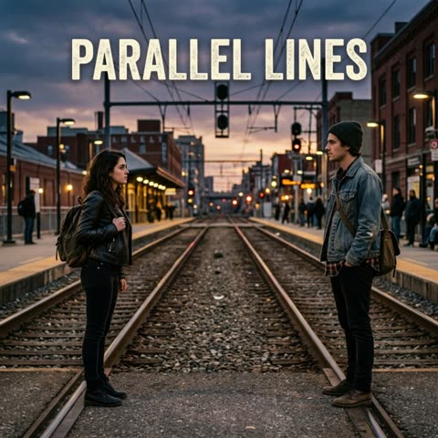

Vizcaya Sound · 2026-08-13
Parallel lines
Lyrics
Terminal B, gate twenty-four
You were grabbing matcha, I was headed for the door
Opposite tracks, same station floor
You're going Uptown, I'm headed Southbound
Eye contact over the yellow line
Caught me slipping in the five PM line
You held the door, I missed my ride on purpose
Now we're on the bench making delay feel worth it
No service down here, but the vibe is clear
Counting down the minutes till your train appears
You've got a ticket to a different state
I've got a boarding pass I'm gonna be late for
Why'd we have to meet at the transfer gate?
We're just two strangers on a moving floor
Going opposite ways through a revolving door
You're heading North, I'm heading West
Two minutes left and my heart's in my chest
It's a main character moment in the station light
Wrong platform, but it feels so right
Yeah, we're parallel lines, but for three brief stops
You were mine, yeah, you were mine
AirPods in, but we turned 'em down
Spilling whole life stories while the crowds move around
You showed me a track that isn't even out
I typed in my handle, saved it in your phone
Said, "Don't leave me on read when you get back home"
Now your doors are opening, sliding on the track
You're stepping on board, looking back, looking back
No service down here, but the vibe is clear
Counting down the seconds till you disappear
You've got a ticket to a different state
I've got a boarding pass I'm gonna be late for
Why'd we have to meet at the transfer gate?
We're just two strangers on a moving floor
Going opposite ways through a revolving door
You're heading North, I'm heading West
Two minutes left and my heart's in my chest
It's a main character moment in the station light
Wrong platform, but it feels so right
Yeah, we're parallel lines, but for three brief stops
You were mine, yeah, you were mine
Should I jump the turnstile? Should I switch my flight?
We built a whole situation in one red light
Am I delulu, or did you feel it too?
The automated voice says the train is leaving soon
Doors closing slow...
Don't let this turn into a "what if" show
We're just two strangers on a moving floor
Going opposite ways through a revolving door
You're heading North, I'm heading West
Two minutes left and my heart's in my chest
It's a main character moment in the station light
Wrong platform, but it feels so right
Yeah, we're parallel lines, but for three brief stops
You were mine, yeah, you were mine
Next stop... you
Opposite tracks, but I'm turning around
Yeah, Southbound can wait
(Next stop... you.)